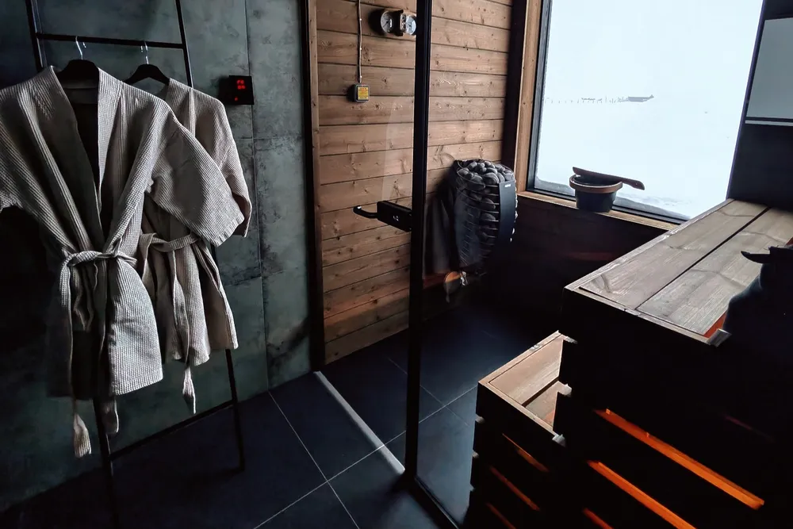
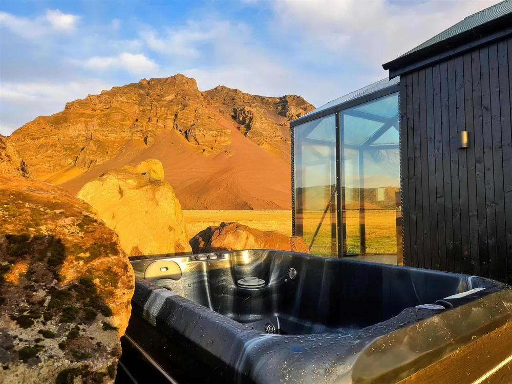
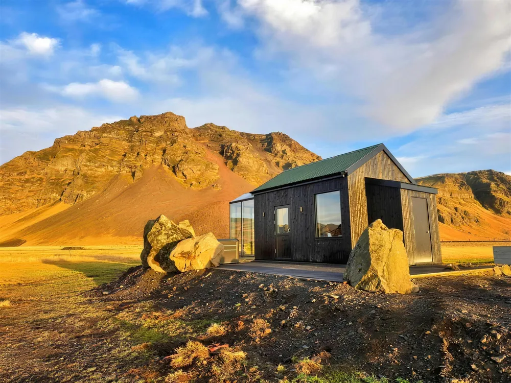
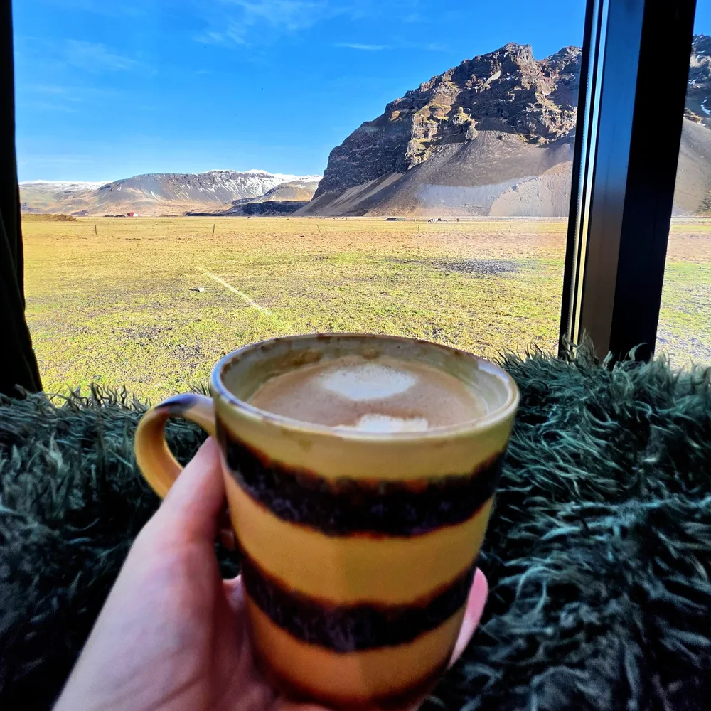
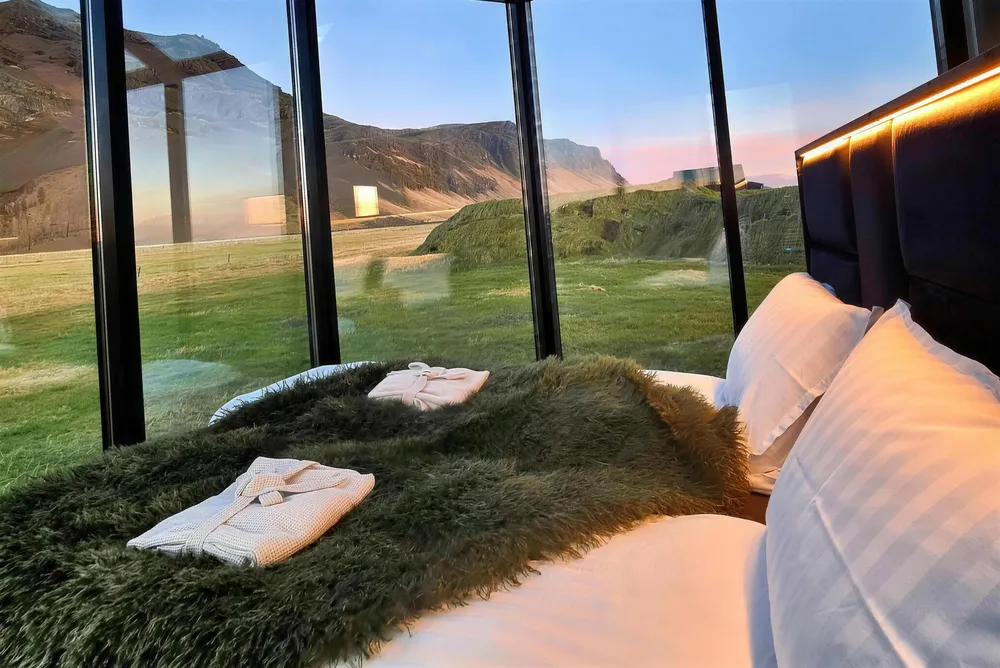
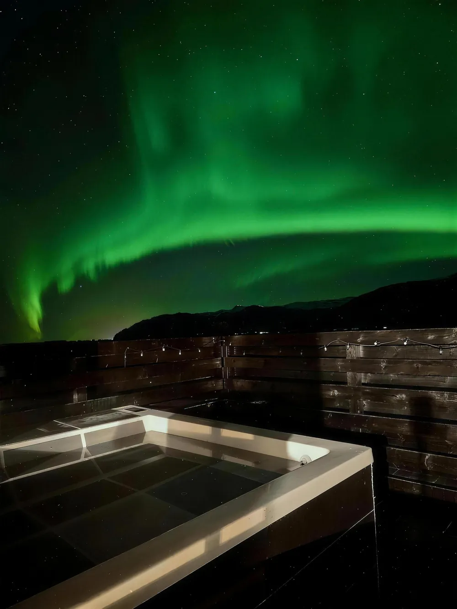

Private sauna
Traditional Finnish, panoramic window

Ormskot · 861 Hvolsvöllur
Sky Retreat sits in Eyjafjöll on the South Coast, in one of the most reliable aurora zones in the country. Two of the cabins have full glass roofs. All of them have a private jacuzzi, a kitchen you can properly cook in, and no neighbours in sight.
Guests rate the stay 9.6 on Booking.com. Almost every one of those bookings arrived through a platform — this page is the other door, straight to the farm.
The cabins
The cabins
The stay

Traditional Finnish, panoramic window
Hydro jets, on your own patio

Nespresso, dishwasher, oven, spices in the cupboard

180×200, blackout curtains, sleep masks
Around you
Vík is 55 minutes on, the Westman Islands ferry 30, and the supermarket in Hvolsvöllur 15. The Glacier Lagoon lies east and the Golden Circle west — the farm sits between them. Distances as published by Sky Retreat.

September to April
A working farm with almost no light pollution — one of the most dependable aurora spots on the South Coast. In summer the midnight sun takes over.
Check your datesThe farm
Sky Retreat is built on a working family farm. That is why it is quiet, why it is dark at night, and why there are lambs in the field in spring.
Midnight sun over the mountains for hours, sheep and lambs, Icelandic horses in the next field.
Auroras often straight overhead, blackout switches inside, and the sauna doing its work.
Practical
From guests
“The most beautiful spot on earth!”
Kelly — Los Angeles
“Quiet and essentially no light pollution. The hot tub was an added plus, especially after very long days of driving and hiking.”
Joey — Connecticut
“Incredible location with amazing views. Had everything we needed. Cannot wait to go back!”
Guest review, Sky Retreat
Reviews published on Sky Retreat's own site. The stay rates 9.6 on Booking.com.
Book direct
From €950 a night in season, booked straight with the farm — no platform in between.
Choose your arrival night to begin.
Continue to bookingOpens Sky Retreat's own secure checkout. Availability and the exact rate are confirmed there.
Questions
In Aurora Glass Cabin I and II, yes — the bedroom roof and the front wall are glass. From September to April the auroras are often directly overhead, and blackout switches let you kill every light inside.
The two glass cabins are 34 m² and built for two. Aurora Cabin sleeps four — twin beds plus a sofa bed. Seljalandsfoss Cabin is a 40 m² family cabin with a king bed and a sofa bed, plus toys and a sandbox for children.
Yes. Both glass cabins add a private Finnish sauna as well.
Each cabin has a full kitchen with a dishwasher, and the staples are already there. Gamla Fjósið and Hótel Anna are 2.7 km away and both do takeaway; there are more than ten restaurants within ten kilometres.
A secure key lockbox at the entrance, any time after 16:00. Parking is free and directly in front of the cabin.
It is between Seljalandsfoss and Skógafoss, ten minutes from each. The Glacier Lagoon is to the east and the Golden Circle to the west, both within a day.